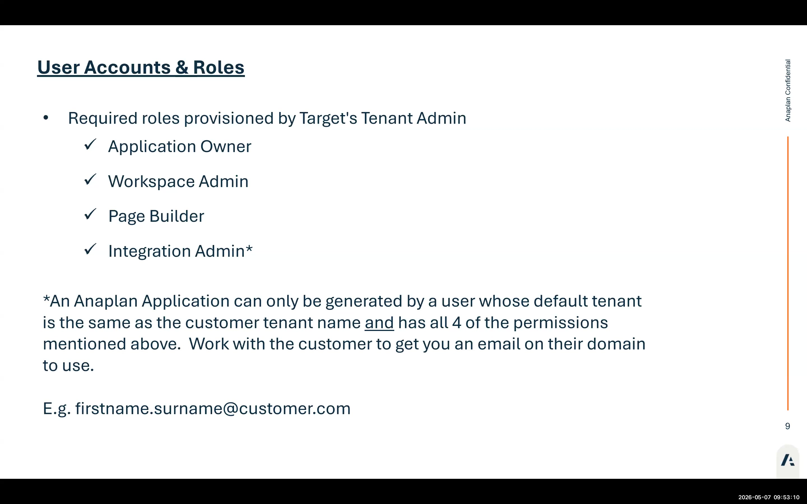
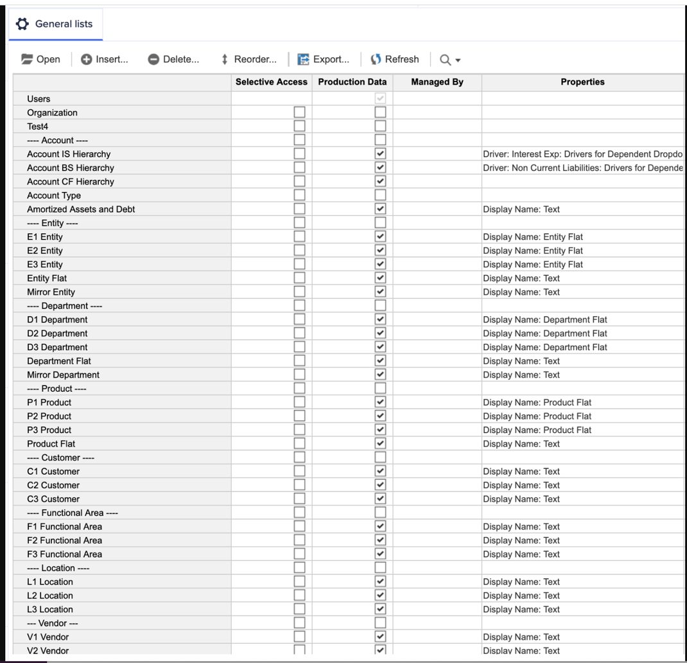
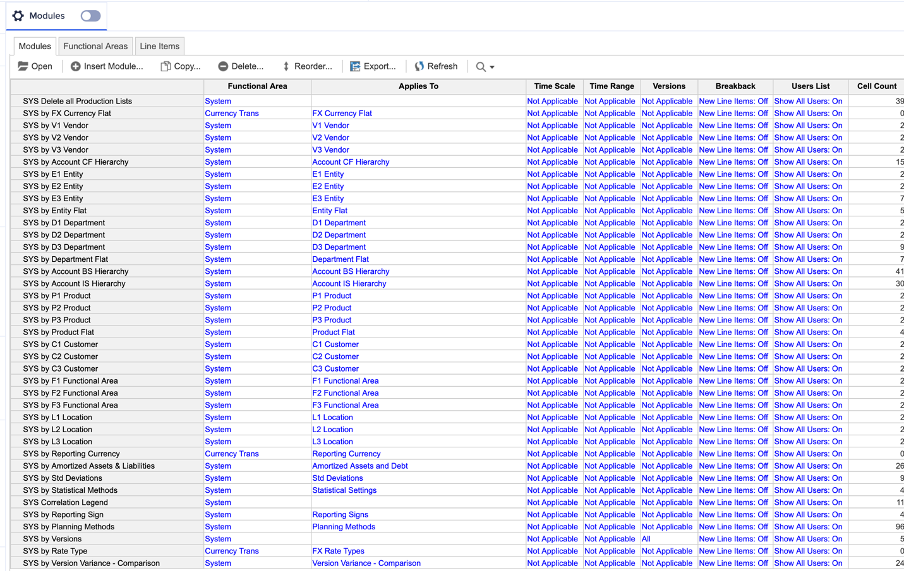
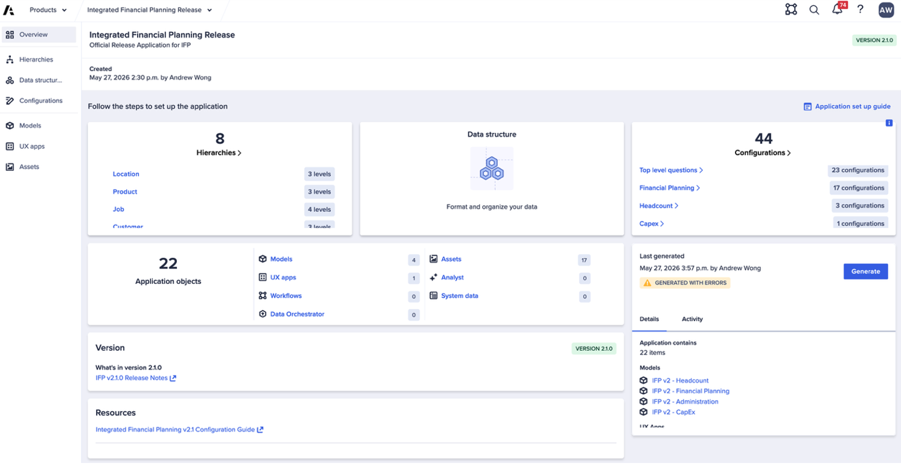

Aperçu d'IFP
Ce qu'est IFP 2.1, ce qui a changé et comment fonctionne l'App Framework
Ceci est une traduction automatique de la version originale en anglais. Pour la version officielle et la plus à jour, consultez la version anglaise. Signalez tout problème de traduction à votre contact Anaplan.
Ce qu'est IFP
Integrated Financial Planning (IFP) est l'application pré-construite d'Anaplan qui prend en charge les cas d'usage fondamentaux de FP&A pour la planification, la budgétisation et les prévisions du chiffre d'affaires, des dépenses opérationnelles, des dépenses d'investissement, des états financiers intégrés, et plus encore — soutenant une prise de décision sûre et un suivi continu de la santé financière. Elle offre une approche structurée, pilotée par l'Application Framework Configurator, qui élimine des mois de construction de modèles et donne aux consultants partenaires un cadre de livraison reproductible.
La version 2.1 est la version actuelle. Elle s'appuie sur la ré-architecture 2.0 qui a introduit l'Application Framework — un système de génération de modèles piloté par l'Application Framework Configurator qui remplace la configuration manuelle de modèles, ainsi que l'intégration de l'Anaplan Data Orchestrator (ADO) et de Headcount Planning 2.0. La version 2.1 affine la configuration ADO et augmente les limites de dimensionnalité.
Nouveautés d'IFP 2.1
| Capacité | De quoi il s'agit | Pourquoi c'est important |
|---|---|---|
| App Framework | Génération pilotée par l'Application Framework Configurator — répondez aux questions, générez un modèle (~500 actions en arrière-plan) | Élimine des semaines de configuration manuelle de modules ; standardise la livraison ; prend 20 à 40 minutes à générer |
| Intégration ADO | Anaplan Data Orchestrator entièrement intégré ; publie automatiquement les liens et les vues de transformation | Les partenaires n'ont qu'à charger les données sources et à pousser les liens ; simplifie considérablement la configuration ADO post-génération |
| Headcount Planning 2.0 | Planification du Headcount au niveau rôle/poste plutôt qu'au niveau employé ; s'intègre avec Workforce Budgeting et OWP | Répond aux préoccupations de confidentialité des données au niveau employé ; permet l'association avec Workforce Budgeting pour un détail Headcount plus poussé |
| Architecture Polaris | Tous les modèles IFP s'exécutent sur Polaris (moteur conscient de la sparsité) | Performance améliorée pour les données éparses ; nécessite une formation Polaris en prérequis ; les hiérarchies denses requièrent une planification de la dimensionnalité |
| Possibilité de mise à niveau | Les futures versions d'IFP peuvent être appliquées comme mises à niveau sans repartir de zéro | Tout premier parcours de mise à niveau pour IFP ; les mises à niveau s'appliquent en dev, puis sont propagées en QA/prod via ALM |
| Ré-architecture étendue | Nommage des modules, structures de Listes, schémas de formules : tout est standardisé avec des GUID uniques sur chaque objet | Permet le suivi des mises à niveau ; plus facile à maintenir, étendre et transférer |
Dimensionnalité dans IFP 2.1
Comprendre quelles Dimensions sont requises ou optionnelles est essentiel avant la première session de configuration avec un client.
| Dimension | Requise ? | Niveaux par défaut | Notes |
|---|---|---|---|
| Entity | ✅ Requise | 3 | Ne peut pas être supprimée ; peut être renommée/réaffectée |
| Account | ✅ Requise | 3 | Ne peut pas être supprimée ; peut être renommée (par ex. en « Project ») |
| Location | Optionnelle | 3 | Activer/désactiver via une question de l'Application Framework Configurator |
| Functional Area / Dept | Optionnelle | 3 | Peut être renommée (par ex. en « Cost Center ») |
| Product | Optionnelle | 3 | Activer pour la planification du chiffre d'affaires ou des dépenses au niveau produit |
| Customer | Optionnelle | 3 | Activer pour la planification au niveau client |
| Job | Optionnelle | 4 | Activer pour la planification au niveau poste ; la valeur par défaut est de 4 niveaux |
| Vendor | Optionnelle | 3 | Activer pour la planification des dépenses au niveau fournisseur |
La valeur par défaut est de 3 niveaux par Dimension, sauf Job qui est par défaut à 4. Chaque Hiérarchie peut être réduite à un minimum de 2 niveaux, ou augmentée jusqu'à 15 niveaux par Dimension. Lors de la suppression de niveaux, le niveau feuille d'origine doit toujours rester en bas. Lors de l'ajout de niveaux, le nouveau niveau est ajouté en bas et doit être glissé au-dessus de la feuille d'origine.
Exigences de provisionnement
Avant toute implémentation, les étapes de provisionnement suivantes doivent être réalisées par l'équipe Anaplan :
- Le client achète l'application IFP (inclut les frais d'abonnement couvrant les mises à niveau)
- Le Customer Success Business Partner ouvre un ticket de provisionnement demandant la création d'un Workspace (100 Go minimum)
- Pour les environnements ALM (dev/QA/prod), des tickets de provisionnement de Workspace séparés sont nécessaires pour chaque environnement
- L'équipe Anaplan déploie l'App Framework sur le Tenant client
- Le partenaire et le Customer Success Business Partner sont notifiés lorsque le déploiement est terminé
L'App Framework ne peut générer qu'à partir de votre Tenant par défaut. Un partenaire utilisant l'e-mail de son cabinet (par ex. john@partnerfirm.com) ne peut pas générer si le Tenant client n'est pas son Tenant par défaut. Solution : obtenir une adresse e-mail dans le domaine du client, ou demander à l'administrateur du Tenant du client de générer pendant que vous le guidez. Rôles requis pour la génération : Application Owner, Workspace Admin, Page Builder, Integration Admin.
Documentation disponible
Toute la documentation est disponible dans Seismic et sur le site SharePoint Anaplan. Ressources clés :
- Application Overview — Description complète d'IFP v2 ; comparaison détaillée avec v1.x ; aperçu de l'architecture
- Configuration Guide — Visite étape par étape des 44 questions de configuration ; checklist des tâches post-génération ; à imprimer pour chaque implémentation
- Process Definition Documents — Comment les processus IFP fonctionnent de bout en bout
- ADO Data Templates — Modèles Excel pour chaque Hiérarchie (location, entity, account, etc.) pour la préparation des données client (URL à venir)
- Functional Walkthrough Videos — Vidéos de 10 à 15 minutes couvrant les fonctionnalités principales ; micro-leçons sur des fonctionnalités spécifiques (URL à venir)
- Extension FAQ — Bonnes pratiques pour documenter les extensions ; ce qui survit aux mises à niveau ; comment se préparer aux cycles de mise à niveau
- Upgrade FAQ — FAQ sur le processus, la fréquence, la portée et les responsabilités partenaires des mises à niveau
- IFP 2.0 vs 2.1 Comparison — Changements détaillés entre versions, y compris améliorations ADO, nouvelles dimensions, plages de niveaux (URL à venir)
- The Anaplan Way for Applications Methodology — Méthodologie complète pour livrer des implémentations applicatives structurées
Architecture des modules
IFPv2 génère une convention de nommage de modules cohérente sur les quatre modèles. Comprendre cette architecture est essentiel pour le dépannage des Error Logs et le travail d'extension.
| Préfixe | Type de Module | Objet |
|---|---|---|
| ADMIN | Administration | Paramètres de configuration, mapping des méthodes de planification, accès utilisateur |
| SYS | Système | Listes système inter-modèles, mappings de Hiérarchies, contrôles booléens |
| DAT | Données | Préparation des données d'actuals, intégrations depuis ADO et le modèle Headcount |
| INP | Entrée | Modules de saisie de planification — là où les utilisateurs saisissent les données prévisionnelles |
| CALC | Calcul | Agrégation, allocation, calculs dérivés à partir des modules INP |
| OUT | Sortie | Modules de sortie consolidés — alimentent les rapports et tableaux de bord en aval |
Le concept de l'App Framework
L'App Framework est le moteur de configuration et de génération. Le workflow est :
Configurer
Répondez à toutes les questions de configuration dans l'Application Framework Configurator. Elles définissent les niveaux de Hiérarchies, les Dimensions, les méthodes de planification et la portée.
Générer
Lancez la Génération. L'App Framework lit vos réponses et provisionne les quatre modèles IFP (Financial Planning, Headcount, Admin, Data Orchestrator). Cela prend 10 à 20 minutes.
Vérifier
Inspectez le modèle généré et les Error Logs. « Generated with errors » est normal et attendu — cela ne signifie pas que le modèle est cassé.
Étendre
Ajoutez des extensions spécifiques au client au-dessus du modèle de base généré. Documentez tout ce que vous modifiez.
Chaque génération IFP 2.0 dans un environnement de formation ou en phase initiale produit des erreurs. Ce sont des erreurs de formule causées par des choix de configuration, le renommage de Hiérarchies ou des différences de géographie par rapport au modèle de base. Le modèle est fonctionnel. Vous apprendrez à lire et résoudre ces erreurs dans la section Revue de l'Error Log.
App Framework — Vue de configuration

Listes de Hiérarchies IFP

Modules SYS après génération

Aperçu de l'App Framework
